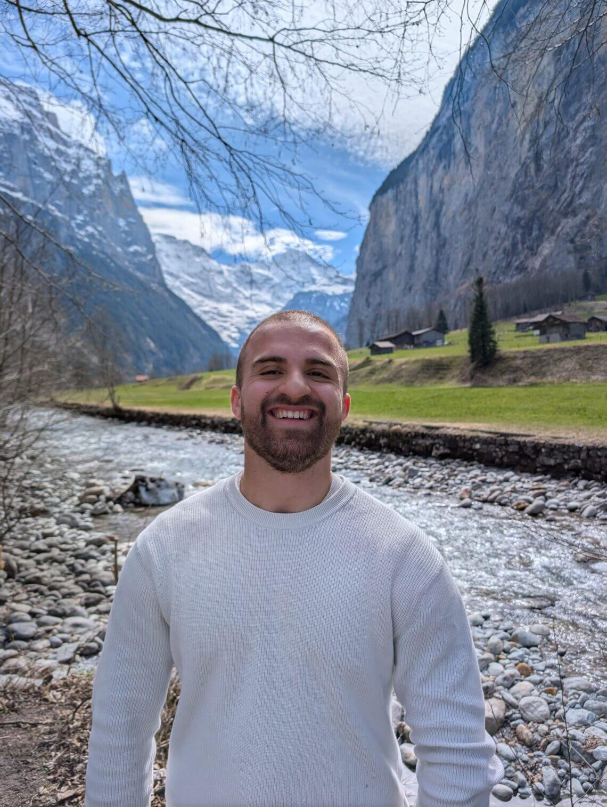
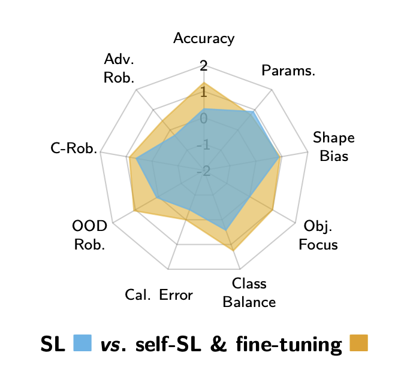

Doğukan Bağcı
I am an incoming PhD student at the Max Planck Institute for Informatics in Saarbrücken, supervised by Prof. Dr. Bernt Schiele and Robin Hesse. My research focuses on the explainability of foundation models — understanding their internal representations — and on leveraging insights from explainable AI (XAI) for downstream benefits in computer vision and beyond.
I hold a M.Sc. in Autonomous Systems and Robotics and a B.Sc. in Business Information Systems, both from TU Darmstadt. During my studies I spent an exchange semester at ETH Zurich & University of Zurich, and I was a scholarship holder of the Konrad Zuse School of Excellence in Learning and Intelligent Systems (ELIZA).
Download CVNews
Publications

Beyond Accuracy: What Matters in Designing Well-Behaved Models?
Projects
OpenAnchor
A privacy-first, self-hosted financial planner. Take full control of your finances without giving up your data.
View on GitHub →